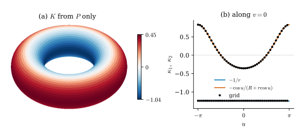

48.2 The Second Fundamental Form in Projection Form
Goals
- 논문 §1의 식 (1.1)–(1.6)이 Section 46.6의 어느 항목인지 찾고, 그 연결(\(P \to A \to B\), 부분적분)을 한 문단으로 다시 말할 수 있다.
- extended second fundamental form \(B\)를 unit normal과 contract하고 tangent plane에 제한하면 shape operator의 matrix가 된다는 것(Proposition 48.2.1)을 증명하고, 부호가 이 study set의 \(W = -d\mathbf{N}\)과 같음을 확인할 수 있다.
- torus of revolution에서 plane field \(P\)만으로 principal curvature를 계산할 수 있다(Figure 48.2.1).
- 논문 §2의 정의들이 Chapter 46–47의 어디에 있는지, 그리고 [BLM17] §2와 무엇이 달라졌는지 안다.
Prerequisites
- Section 46.6: \(A_{ijk}\)와 \(B^k_{ij}\)(Proposition 46.6.1), 부분적분 공식(Proposition 46.6.3)
- Definition 8.1.12(shape operator \(W = -d\mathbf{N}\))와 Definition 8.3.4(principal curvature)
- Section 46.4, Section 46.5, Section 46.7, Section 47.2: varifold, mass, first variation, bounded Lipschitz distance
- Section 48.1의 Conventions 상자
Motivation
Section 48.1은 부분적분 공식 (48.1.1)에서 출발해 curvature tensor \(A\)를 풀어낸다는 계획을 세웠다. 계획의 두 끝을 먼저 고정해야 한다. 출발점은 smooth submanifold에서 \(A\)가 무엇이고 그 공식이 어떻게 나오는지이고, 도착점은 \(A\)(또는 \(B\))를 얻은 뒤 principal curvature를 어떻게 읽는지다. 논문 §1이 앞의 것을 정리하고, 뒤의 것은 §7.1이 증명 없이 쓴다. 이 절은 둘을 함께 다룬다. 앞의 것은 Chapter 46에서 이미 증명했으므로 대응표로 정리하고, 뒤의 것은 명제로 증명한다. 마지막으로 §2의 varifold 정의들을 Chapter 46–47과 맞춘다.
Section 1: The Classical Second Fundamental Form
논문 §1은 Hutchinson의 기호를 따라 smooth \(d\)-submanifold \(M \subseteq \R^n\)의 second fundamental form을 tangent projection \(P(x)\)의 도함수로 다시 쓴다. 각 식의 정의와 증명은 Section 46.6에 있다.
| [BLM22] | 내용 | 이 study set |
|---|---|---|
| §1 (번호 없음) | \(S\)-gradient \(\nabla^Sf = \Pi_S\nabla f\), \(S\)-divergence \(\divg_SX\) | Definition 46.3.5 |
| §1 (번호 없음) | \(G_{d,n}\)의 거리 \(\norm{\Pi_T - \Pi_P}\)(operator norm) | Definition 46.3.1, Proposition 46.3.4 |
| §1 (번호 없음) | \(\mathrm{II}(U, V) = (D_UV)^\perp\), extended form \(\mathbf{B}(U, V) = \mathrm{II}(U^{\mathsf T}, V^{\mathsf T})\) | Section 46.6 첫머리 |
| (1.1) | \(B^k_{ij} = \inner{\mathbf{B}(e_i, e_j)}{e_k}\) | (46.6.1) |
| (1.2) | \(A_{ijk} = \inner{\nabla^MP_{jk}}{e_i}\) | (46.6.2) |
| (1.3), (1.4) | \(A_{ijk} = B^k_{ij} + B^j_{ik}\), \(B^k_{ij} = \tfrac12(A_{ijk} + A_{jik} - A_{kij})\) | Proposition 46.6.1(a), (b) |
| §1 (번호 없음) | symmetry \(A_{ijk} = A_{ikj}\), \(B^k_{ij} = B^k_{ji}\) | Proposition 46.6.1(b), (c) |
| (1.5) | divergence theorem \(\int_M\divg_M(PX) = \int_{\partial M}\inner{X}{\eta}\) | Proposition 46.5.3 |
| (1.6) | \(P_{jk}\)를 곱한 부분적분 공식 | (46.6.5), (48.1.1) |
| (1.6) 아래 | \(\sum_qA_{qiq} = \inner{H}{e_i}\)(합의 규약, 이 장의 \(\vec H_i\)) | Proposition 46.6.1(c) |
연결은 이렇다. tangent plane을 projection matrix \(P(x)\)로 저장하면, 그 tangential 도함수 \(A_{ijk}\)는 “plane이 \(e_i\) 방향으로 움직일 때 얼마나 기우는가”이고, (1.3)과 (1.4)로 \(B\)와 서로 바뀐다. (1.6)은 test vector field \(X = \varphi P_{jk}e_i\)를 divergence theorem에 넣은 것이고, 그 왼쪽에는 \(P\)만 남는다. 논문은 (1.3)–(1.4)의 증명을 §3의 Proposition 3.6에 미룬다. 그것은 약한 판의 증명이고(Section 48.3), smooth한 경우의 증명은 Proposition 46.6.1에 있다.
Reading Principal Curvatures from B
WSFF든 그 근사든, 논문의 계산이 내놓는 것은 \(n^3\)개의 수 \(A_{ijk}\)다. principal curvature를 보고 싶으면 이것을 \(d \times d\) symmetric matrix로 줄여야 한다. 논문 §7.1은 \(B^k_{ij}\)를 unit normal \(n\)과 contract한 \(\sum_kB^k_{ij}n_k\)를 tangent plane에 제한하고 그 eigenvalue를 principal curvature로 쓴다. 근거는 적혀 있지 않다. 아래 명제가 그 근거이고, 부호가 어떻게 정해지는지도 알려 준다.
Proposition 48.2.1 (principal curvatures from the extended second fundamental form). \(M \subseteq \R^n\)이 \(C^2\) hypersurface(\(d = n - 1\))이고, \(x \in M\)에서 \(\mathbf{N}\)이 unit normal, \(W = -d\mathbf{N}\)이 shape operator, \(P = P(x)\)라 하자. \(Q\)는 \(T_xM\)의 orthonormal basis를 열로 갖는 \(n \times d\) matrix이고
라 하자. 그러면 다음이 성립한다.
- \(B^k_{ij} = \inner{WPe_i}{Pe_j}\,\mathbf{N}_k\)이다. 따라서 모든 \(a, b \in \R^n\)에 대해 \(a^{\mathsf T}B_{\mathbf{N}}b = \inner{WPa}{Pb}\)이다.
- \(Q^{\mathsf T}B_{\mathbf{N}}Q\)는 basis \(Q\)에 대한 \(W\)의 matrix다. 그래서 그 eigenvalue는 \(\mathbf{N}\)에 대한 principal curvature \(\kappa_1, \dots, \kappa_d\)이고, eigenvector \(y\)마다 \(Qy\)가 principal direction이다. 또 \(B_{\mathbf{N}}\mathbf{N} = 0\)이고 \(B_{\mathbf{N}}\)의 eigenvalue는 \(\kappa_1, \dots, \kappa_d, 0\)이다.
- \(\tr B_{\mathbf{N}} = \kappa_1 + \dots + \kappa_d = \inner{\vec H}{\mathbf{N}}\)이고 \(\det(Q^{\mathsf T}B_{\mathbf{N}}Q) = \kappa_1\cdots\kappa_d\)이다. \(d = 2\)이면 이것이 Gaussian curvature \(K\)다.
- \(B\)는 \(\mathbf{N}\)의 선택에 의존하지 않는다. \(\mathbf{N}\)을 \(-\mathbf{N}\)으로 바꾸면 \(B_{\mathbf{N}}\)은 \(-B_{\mathbf{N}}\)이 되고 모든 \(\kappa_l\)의 부호가 바뀐다.
논문은 §7.1에서 이 절차를 증명 없이 쓴다. 명제와 증명은 우리의 것이다. [BLM22, (1.1), §7.1]
Proof. (a) tangent vector field \(U, V\)에 대해 \(\inner{V}{\mathbf{N}} = 0\)을 \(U\) 방향으로 미분하면 \(\inner{D_UV}{\mathbf{N}} = -\inner{V}{D_U\mathbf{N}} = \inner{V}{WU}\)이다. hypersurface의 normal space는 \(\mathbf{N}\)이 span하므로 \(\mathrm{II}(U, V) = \inner{D_UV}{\mathbf{N}}\mathbf{N} = \inner{WU}{V}\mathbf{N}\)이다. 정의대로 \(\mathbf{B}(e_i, e_j) = \mathrm{II}(Pe_i, Pe_j) = \inner{WPe_i}{Pe_j}\mathbf{N}\)이고, \(e_k\)와 inner product를 취하면 첫 식이다. \(\abs{\mathbf{N}} = 1\)이므로 \(\mathbf{N}\)과 contract하면 \((B_{\mathbf{N}})_{ij} = \inner{WPe_i}{Pe_j}\)이고, 둘째 식은 bilinear성에서 나온다.
(b) \(PQ = Q\)이므로 (a)에서 \((Q^{\mathsf T}B_{\mathbf{N}}Q)_{ab} = \inner{Wq_a}{q_b}\)(\(q_a\)는 \(Q\)의 \(a\)번째 열)이다. 이것이 orthonormal basis에 대한 \(W\)의 matrix이고, \(W\)는 self-adjoint이므로(Theorem 8.1.10) symmetric이다. 그 eigenvalue와 eigenvector가 정의대로 principal curvature와 principal direction이다(Definition 8.3.4). \(P\mathbf{N} = 0\)이므로 (a)에서 \(B_{\mathbf{N}}\mathbf{N} = 0\)이다. \(P = QQ^{\mathsf T}\)이므로 \(B_{\mathbf{N}} = Q(Q^{\mathsf T}B_{\mathbf{N}}Q)Q^{\mathsf T}\)이고, \(B_{\mathbf{N}}\)의 eigenvalue는 \(Q^{\mathsf T}B_{\mathbf{N}}Q\)의 eigenvalue에 \(\mathbf{N}\) 방향의 \(0\)을 더한 것이다.
(c) trace와 determinant는 (b)에서 바로 나온다. Proposition 46.6.1(c)의 \(\vec H = \sum_l\mathrm{II}(\tau_l, \tau_l)\)에 (a)의 \(\mathrm{II}\)를 넣으면 \(\vec H = (\tr W)\mathbf{N}\)이므로 \(\inner{\vec H}{\mathbf{N}} = \tr W\)이다.
(d) \(\mathbf{B}\)는 \((D_UV)^\perp\)로 정의되므로 normal의 선택이 들어가지 않는다. \(B_{\mathbf{N}}\)은 \(\mathbf{N}\)에 대해 linear이므로 부호가 바뀌고, \(-\mathbf{N}\)의 shape operator는 \(-W\)다. \(\square\)
이 명제가 말하는 것은 두 가지다. 첫째, \(B\)는 curvature 정보를 normal의 방향과 무관하게 모두 담고 있고, principal curvature를 읽으려면 normal의 부호와 tangent plane의 basis라는 두 가지가 더 필요하다. point cloud에서는 PCA가 둘을 준다. 가장 작은 eigenvalue의 eigenvector가 \(\mathbf{N}\)(부호는 임의)이고 나머지 둘이 \(Q\)다. 둘째, 바깥쪽 normal을 고르면 convex한 곳의 principal curvature가 음수다. 반지름 \(r\)인 sphere에서 바깥쪽 \(\mathbf{N} = x/r\)이면 Example 46.6.2(b)의 \(B^k_{ij} = -P_{ij}x_k/r^2\)에서 \(B_{\mathbf{N}} = -P/r\)이고, 두 principal curvature는 \(-1/r\)이다. 이것은 Definition 8.1.12의 \(W = -d\mathbf{N}\)과 같은 부호다. 논문은 normal의 부호를 정하지 않으므로, 부호에 무관한 \(\kappa_1\kappa_2\), \(\abs{\kappa_1} + \abs{\kappa_2}\), \(\abs{\kappa_1 + \kappa_2}\)만 그린다(Exercise 48.1.1).
Example 48.2.2 (the torus of revolution). \(R = 2\), \(r = 0.8\)인 \(T_{2,0.8}\)
\[ \begin{aligned} x(u, v) &= \big((R + r\cos u)\cos v, \\ &\qquad (R + r\cos u)\sin v,\ r\sin u\big) \end{aligned} \]
에서 바깥쪽 unit normal은 \(\mathbf{N} = (\cos u\cos v, \cos u\sin v, \sin u)\)이고, principal curvature는 meridian 방향 \(x_u\)로 \(-1/r = -1.25\), 위도 원 방향 \(x_v\)로 \(-\cos u/(R + r\cos u)\)이다. Example 8.3.6은 안쪽 normal을 써서 두 값의 부호가 반대다.
- 바깥 equator의 점 \((2.8, 0, 0)\)(\(u = 0\), \(v = 0\)): \(\mathbf{N} = e_1\), \(x_u \parallel e_3\), \(x_v \parallel e_2\)이므로 \(B_{\mathbf{N}} = \diag(0, -0.3571, -1.25)\)이다. 두 principal curvature가 모두 음수이고 \(K = 0.4464\)다.
- 안쪽 equator의 점 \((1.2, 0, 0)\)(\(u = \pi\)): \(\mathbf{N} = -e_1\)(tube의 바깥쪽, 곧 회전축 쪽)이고 \(B_{\mathbf{N}} = \diag(0, 0.8333, -1.25)\)이다. 부호가 다르므로 saddle이고 \(K = -1.0417\)이다.
- 위아래 원(\(u = \pm\pi/2\)): \(\cos u = 0\)이므로 한 principal curvature가 \(0\)이고 \(K = 0\)이다. \(B_{\mathbf{N}}\)의 eigenvalue는 \(-1.25, 0, 0\)이다.
\(B_{\mathbf{N}}\)의 둘째, 셋째 대각 성분은 \(\mathbf{N}\)에 수직인 \(e_2\), \(e_3\) 방향, 곧 tangent 방향이다. 첫째 성분이 \(0\)인 것이 (b)의 \(B_{\mathbf{N}}\mathbf{N} = 0\)이다.
Verification: verify/v-48-2-projection-form.py
이 계산은 \(W\)를 미리 알고 한 것이다. 논문의 관점은 반대다. 점마다 plane \(P\)만 주어졌을 때 \(P\)를 미분해 \(A\)를 만들고, (1.4)로 \(B\)를 만들고, normal로 contract해 curvature를 읽는다. Figure 48.2.1은 이것을 그대로 해 본 것이다. torus의 \((u, v)\) 격자 \(48 \times 96\)개 점에서 위치 \(x\)와 plane \(P = I - \mathbf{N}\mathbf{N}^{\mathsf T}\)만 저장하고, 이웃한 격자점의 차분으로 \(x_u\), \(x_v\), \(P_u\), \(P_v\)를 구한다. tangential gradient는 \(\nabla^MP_{jk} = \sum_{a,b}g^{ab}(\partial_aP_{jk})\,x_b\)(\(g_{ab}\)는 \(x_u\), \(x_v\)의 inner product, \(g^{ab}\)는 그 inverse matrix)이고, 그 \(i\)번째 성분이 \(A_{ijk}\)다. 그다음은 (1.4)와 (48.2.1)이다.
(a)는 이렇게 얻은 \(K = \det(Q^{\mathsf T}B_{\mathbf{N}}Q)\)로 torus를 칠한 것이다. 바깥쪽이 빨강(\(K \gt 0\), 최대 \(0.446\)), 안쪽이 파랑(\(K \lt 0\), 최소 \(-1.042\))이고, 위아래 원을 따라 흰 띠(\(K = 0\))가 지난다. 색의 \(0\)은 가운데에 고정했으므로 파랑이 더 진한 것은 \(\abs{K}\)가 안쪽에서 더 크기 때문이다. (b)는 \(v = 0\)인 meridian을 따라 두 eigenvalue를 \(u\)에 대해 그린 것이다. 파란 선 \(-1/r = -1.25\)는 상수이고, 주황 선 \(-\cos u/(R + r\cos u)\)는 바깥 equator(\(u = 0\))의 \(-0.357\)에서 안쪽 equator(\(u = \pm\pi\))의 \(+0.833\)까지 올라간다. 격자에서 계산한 값(검은 점)이 두 선 위에 놓인다. 최대 오차는 principal curvature에서 \(0.011\), \(K\)에서 \(0.011\)이다. 오차는 격자 간격 \(h = 2\pi/48\)의 central difference에서 온다. \(P\)는 \(\mathbf{N}\)의 이차식이라 차분이 각을 두 배로 보고(\(\sin 2h/2h\)), \(x\)의 차분(\(\sin h/h\))과 비율이 \(0.991\)이 되어 \(-1.25\)가 \(-1.239\)가 된다.

Verification: verify/v-48-2-projection-form.py
Remark 48.2.3 (why the paper contracts B and not A). smooth hypersurface에서는 \(\sum_kA_{ijk}\mathbf{N}_k\)도 같은 matrix다. (1.3)에서 \(\sum_kA_{ijk}\mathbf{N}_k = (B_{\mathbf{N}})_{ij} + \sum_kB^j_{ik}\mathbf{N}_k\)이고, (a)에서 둘째 항은 \(\inner{WPe_i}{P\mathbf{N}}\mathbf{N}_j = 0\)이다. 그런데 근사한 \(A\)에서는 둘째 항이 \(0\)이 아니고 \(\sum_kA_{ijk}\mathbf{N}_k\)는 symmetric이 아닐 수 있다. 반면 (1.4)로 만든 \(B_{\mathbf{N}}\)은 \(A_{ijk} = A_{ikj}\)이기만 하면 항상 symmetric이다(Exercise 48.2.1). G-linear variation에서 만든 근사 \(A\)는 \(S_{jk} = S_{kj}\)이므로 이 조건을 만족한다. 그래서 \(B\)를 거치면 eigenvalue가 실수로 보장된다. 예를 들어 \(T_{2,0.8}\) 위의 area-uniform random point cloud(점 \(20000\)개, 정확한 plane)에서 \(\varepsilon = 0.25\)로 (48.1.2)을 계산하면, 안쪽 equator 근처의 한 점에서 \(\sum_kA_{ijk}\mathbf{N}_k\)가 symmetric에서 벗어난 정도 \(\max_{ij}\abs{M_{ij} - M_{ji}}\)이 \(0.14\)이고 \(B_{\mathbf{N}}\)은 정확히 symmetric이다. 이 해석은 우리의 것이다. 논문은 \(B\)를 쓰는 이유를 적지 않는다.
Verification: verify/v-48-2-projection-form.py
Section 2: Varifolds
논문 §2는 varifold의 기본 정의를 모은다. 모두 Chapter 46과 Section 47.2에 있으므로 대응표로 정리한다. 셋째 열은 [BLM17](arXiv v1)의 같은 항목이다.
| [BLM22] | 내용 | [BLM17] | 이 study set |
|---|---|---|---|
| Def 2.1 | \(d\)-varifold | Def 2.1 | Definition 46.4.1 |
| Def 2.2 | rectifiable varifold \(v(M, \theta)\), integral varifold | Def 2.2 | Definition 46.4.4 |
| Def 2.3 | point cloud varifold \(\sum_im_i\delta_{x_i} \otimes \delta_{P_i}\) | Def 2.12 | Definition 46.4.6 |
| Def 2.4 | mass \(\norm{V}\) | Def 2.3 | Definition 46.4.2 |
| Prop 2.5 | Young measure 표현 \(V = \norm{V} \otimes \{\nu_x\}_x\) | Prop 2.4 | Proposition 46.4.7 |
| Def 2.6 | varifold의 weak-* 수렴 | Def 2.5 | Definition 46.4.8 |
| Def 2.7 | bounded Lipschitz distance \(\Delta\) | Def 2.6 (\(\Delta^{1,1}\)) | Definition 46.7.6 |
| Def 2.8 | 국소판 \(\Delta_U(V, W)\), \(\Delta_U(\norm{V}, \norm{W})\) | Def 2.7 | Definition 47.2.1 |
| Prop 2.9 | mass bounded, 공통 compact support이면 \(\Delta \to 0 \iff\) weak-* 수렴 | Prop 2.8 | Proposition 46.7.7 |
| Def 2.10 | first variation \(\delta V(X) = \int\divg_SX\,dV\) | Def 2.9 | Definition 46.5.1 |
| Remark 2.11 | 스칼라 \(\varphi\)의 \(\delta V(\varphi) = \int\nabla^S\varphi\,dV\), Lipschitz \(X\), 넓이의 변화율, locally bounded first variation | Remark 2.10 | Remark 47.2.2, Proposition 46.5.2, Definition 46.5.4 |
| (2.1) | \(\delta V = -H\norm{V} + \delta V_s\) | (2.1) | (46.5.5) |
Remark 48.2.4 (what changed from [BLM17]). 두 논문의 §1–§2를 나란히 놓고 비교한 결과다(우리의 비교).
- 차원: [BLM17]은 \(1 \le d \lt n\), 이 논문은 \(1 \le d \le n\)이다. \(d = n\)이면 \(G_{n,n} = \{I\}\)이므로 varifold는 \(\Omega\) 위의 measure와 같다. 이 장의 예와 실험은 모두 \(d \lt n\)이다.
- 거리의 이름: \(\Delta^{1,1}\)을 \(\Delta\)로 줄여 쓴다. 이 장은 Chapter 46–47에 맞춰 \(\Delta^{1,1}\)로 쓴다.
- [BLM17]에서 고친 곳: Definition 2.8의 mass판에서 \(\mathrm{Lip}(\Omega)\)가 \(\mathrm{Lip}_1(\Omega)\)로 바뀌었고, Remark 2.11은 push-forward \(V_t\)에 tangential Jacobian \(J^S\varphi_t\)를 곱한 식을 명시한다. 둘 다 Section 47.2의 Warning 상자가 지적한 곳이다. Proposition 2.9는 공간이 separable이라는 가정을 덧붙였다.
- point cloud varifold: [BLM17]에서는 discrete varifold의 한 종류(§2.2의 Definition 2.12)였는데, 여기서는 §2의 Definition 2.3으로 올라왔다. volumetric varifold와 mesh(Definition 47.2.4)는 이 논문에 나오지 않는다.
- \(S\)-divergence: [BLM17]은 \(\divg_PX = \sum_j\inner{P\nabla X_j}{e_j}\)(표준 basis), 이 논문은 \(S\)의 orthonormal basis로 쓴다. 같은 양이다((46.3.3)).
§2의 마지막 식 (2.1)이 이 논문의 출발점이다. first variation이 measure이면 그 density가 mean curvature다. 논문은 §3에서 이 문장을 그대로 따라간다. first variation 대신 \(P_{jk}\)를 곱한 G-linear variation을 쓰고, 그 density에서 \(A\)를 푼다. point cloud에서는 (2.1)도 그 G-linear판도 measure가 아니므로(Remark 47.2.8), §6에서 kernel로 흐린다.
Summary
- 논문 §1의 (1.1)–(1.6)은 Section 46.6의 내용이다. tangent projection \(P\)의 도함수 \(A\)와 extended second fundamental form \(B\)는 (1.3)–(1.4)로 서로 바뀌고, (1.6)의 왼쪽에는 \(P\)만 남는다(Table 48.2.1).
- hypersurface에서 \(B_{\mathbf{N}} = \sum_kB^k_{ij}\mathbf{N}_k\)를 tangent plane에 제한한 \(Q^{\mathsf T}B_{\mathbf{N}}Q\)는 \(W = -d\mathbf{N}\)의 matrix이고, 그 eigenvalue가 principal curvature다(Proposition 48.2.1). 바깥쪽 normal이면 sphere에서 \(-1/r\)이다. \(A_{ijk} = A_{ikj}\)이면 \(B_{\mathbf{N}}\)은 항상 symmetric이다.
- torus \(T_{2,0.8}\)에서 \(P\)의 격자 차분만으로 계산한 principal curvature가 정확한 값과 \(0.011\) 안에서 맞는다(Figure 48.2.1).
- 논문 §2의 정의는 Chapter 46–47에 모두 있다(Table 48.2.2). [BLM17]과 달리 \(d = n\)을 허용하고, \(\Delta^{1,1}\)을 \(\Delta\)로 쓰며, [BLM17]의 인쇄 오류 두 곳을 고쳤다.
다음 절에서는 논문 §3을 읽는다. (1.6)의 왼쪽을 varifold로 옮긴 G-linear variation을 정의하고, 그것이 measure일 때 density에서 \(A\)를 푸는 \(n^3 \times n^3\) linear system이 언제나 유일한 해를 갖는다는 것(Lemma 3.4)과 그 해의 닫힌 꼴을 증명한다. 그 해가 weak second fundamental form이다.
Quick check
Exercise 48.2.1 ★ \(n^3\)개의 수 \(A_{ijk}\)에서 \(B^k_{ij} = \tfrac12(A_{ijk} + A_{jik} - A_{kij})\)로 \(B\)를 만든다. \(B^k_{ji} - B^k_{ij}\)를 \(A\)로 쓰고, \(B\)가 \((i, j)\)에 대해 symmetric인 것이 \(A\)가 뒤의 두 첨자에 대해 symmetric인 것과 동치임을 보여라. 그로부터 \(B_\nu = \sum_kB^k_{ij}\nu_k\)가 모든 vector \(\nu\)에 대해 symmetric matrix임을 결론지어라.
Solution
\(B^k_{ji} = \tfrac12(A_{jik} + A_{ijk} - A_{kji})\)이므로 \(B^k_{ji} - B^k_{ij} = \tfrac12(A_{kij} - A_{kji})\)이다. 이것이 모든 \(i, j, k\)에서 \(0\)인 것은 모든 \(k, i, j\)에서 \(A_{kij} = A_{kji}\)인 것과 같다. 이때 \((B_\nu)_{ji} = \sum_kB^k_{ji}\nu_k = \sum_kB^k_{ij}\nu_k = (B_\nu)_{ij}\)이다. G-linear variation과 그 근사는 plane의 성분 \(S_{jk}\)에 linear이고 \(S_{jk} = S_{kj}\)이므로 \(A_{ijk} = A_{ikj}\)를 만족한다. 그래서 논문 §7.1의 \(2 \times 2\) matrix는 데이터가 어떻든 symmetric이고 eigenvalue가 실수다.
Verification: verify/v-48-2-projection-form.py
Exercise 48.2.2 ★ 반지름 \(r\)인 cylinder \(\{x_1^2 + x_2^2 = r^2\}\)의 점 \((r, 0, 0)\)에서 바깥쪽 normal로 \(B_{\mathbf{N}}\)을 구하고, \(3 \times 3\) matrix \(B_{\mathbf{N}}\)의 eigenvalue가 \(-1/r, 0, 0\)임을 보여라. 왜 \(B_{\mathbf{N}}\)의 eigenvalue만 보고는 principal curvature를 정할 수 없고 \(Q\)로 제한해야 하는가?
Solution
\(\mathbf{N} = e_1\)이고, \(e_2\) 방향(cross-section의 원)의 principal curvature는 \(-1/r\), \(e_3\) 방향(직선)은 \(0\)이다. Proposition 48.2.1(a)에서 \(B_{\mathbf{N}} = \diag(0, -1/r, 0)\)이고 eigenvalue는 \(-1/r, 0, 0\)이다. \(0\) 두 개 가운데 하나는 normal 방향(\(B_{\mathbf{N}}\mathbf{N} = 0\))이고 하나는 진짜 principal curvature \(0\)이다. eigenvalue만으로는 둘을 구별할 수 없으므로, \(3\)개 중 “\(0\)을 하나 버리는” 방법은 \(K = 0\)인 곳에서 틀린 답을 낼 수 있다. tangent basis \(Q = (e_2, e_3)\)로 제한하면 \(\diag(-1/r, 0)\)이 되어 모호함이 없다.
Verification: verify/v-48-2-projection-form.py
Exercise 48.2.3 ★ hypersurface에서 \(\sum_{i,j,k}(B^k_{ij})^2 = \sum_l\kappa_l^2\)이고 \(\sum_{i,j,k}A_{ijk}^2 = 2\sum_l\kappa_l^2\)임을 보여라. (힌트: Proposition 46.6.1(d)의 \(D_UP = (WU)\mathbf{N}^{\mathsf T} + \mathbf{N}(WU)^{\mathsf T}\).) \(T_{2,0.8}\)의 바깥 equator에서 두 값을 계산하여라.
Solution
(a)에서 \(B^k_{ij} = (B_{\mathbf{N}})_{ij}\mathbf{N}_k\)이므로 \(\sum(B^k_{ij})^2 = \norm{B_{\mathbf{N}}}_F^2\sum_k\mathbf{N}_k^2 = \norm{B_{\mathbf{N}}}_F^2\)이고, \(B_{\mathbf{N}}\)의 eigenvalue가 \(\kappa_1, \dots, \kappa_d, 0\)이므로 \(\sum_l\kappa_l^2\)이다. \(A_{i\cdot\cdot}\)는 matrix \(D_{Pe_i}P = w\mathbf{N}^{\mathsf T} + \mathbf{N}w^{\mathsf T}\)(\(w = WPe_i \perp \mathbf{N}\))이고, 그 Frobenius norm의 제곱은 \(2\abs{w}^2\)이다(\(\abs{w\mathbf{N}^{\mathsf T}}_F^2 = \abs{w}^2\), 교차항 \(2\inner{w}{\mathbf{N}}^2 = 0\)). \(i\)에 대해 더하면 \(2\sum_i\abs{WPe_i}^2 = 2\norm{WP}_F^2 = 2\sum_l\kappa_l^2\)이다. 바깥 equator에서 \(\kappa = (-1.25, -0.3571)\)이므로 \(\sum\kappa_l^2 = 1.6901\), \(\sum A_{ijk}^2 = 3.3801\)이다.
Verification: verify/v-48-2-projection-form.py
Exercise 48.2.4 ★★ \(\R^3\)의 \(x_1x_2\)-평면에 놓인 반지름 \(r\)인 circle(\(d = 1\), \(n = 3\), codimension \(2\))에서, 점 \(x\)의 unit tangent를 \(\tau\)라 하자. \(B^k_{ij} = -\tau_i\tau_jx_k/r^2\)임을 보이고, unit normal \(\nu = \cos\alpha\,(x/r) + \sin\alpha\,e_3\)에 대해 \(\tau^{\mathsf T}B_\nu\tau = -\cos\alpha/r\)임을 보여라. codimension이 \(2\) 이상이면 Proposition 48.2.1의 절차에서 무엇이 달라지는가?
Solution
\(\mathbf{B}(U, V) = \inner{U}{\tau}\inner{V}{\tau}\,\mathrm{II}(\tau, \tau)\)이고 \(\mathrm{II}(\tau, \tau) = D_\tau\tau = -x/r^2\)(circle의 curvature vector는 중심을 향하고 크기 \(1/r\)이며, 이미 normal이다)이므로 \(B^k_{ij} = -\tau_i\tau_jx_k/r^2\)이다. \(\nu\)와 contract하면 \(\sum_kx_k\nu_k = r\cos\alpha\)이므로 \(B_\nu = -(\cos\alpha/r)\tau\tau^{\mathsf T}\)이고 \(\tau^{\mathsf T}B_\nu\tau = -\cos\alpha/r\)이다. \(\alpha = \pi/2\)(\(\nu = e_3\))이면 \(0\)이다. codimension이 \(2\) 이상이면 normal이 하나로 정해지지 않으므로, \(B_\nu\)는 normal 방향 \(\nu\)마다 다른 shape operator를 준다. principal curvature 한 쌍 대신 normal space의 basis \(\nu_1, \nu_2, \dots\)마다 matrix가 하나씩 있다. 논문 §7.1의 절차는 \(\R^3\)의 surface(codimension \(1\))에 대한 것이다. tensor \(B\) 자체와 \(\vec H = \sum_qA_{q\cdot q} = -x/r^2\)은 codimension과 무관하게 정의된다.
Verification: verify/v-48-2-projection-form.py
Exercise 48.2.5 ★ \(\R\) 위의 Dirac measure \(\mu_i = \delta_i\)(\(i = 1, 2, \dots\))가 \(0\)으로 weak-* 수렴하지만 \(\Delta^{1,1}(\mu_i, 0) = 1\)임을 보여라. Proposition 2.9의 어느 가정이 깨졌는가?
Solution
\(\varphi \in C^0_c(\R)\)이면 \(i\)가 \(\supp\varphi\)보다 크면 \(\varphi(i) = 0\)이므로 \(\mu_i(\varphi) \to 0\)이다. 반면 \(\varphi(x) = \max(0, 1 - \abs{x - i})\)는 \(\mathrm{Lip}_1\)이고 \(\norm{\varphi}_\infty = 1\)이므로 \(\Delta^{1,1}(\mu_i, 0) \ge \varphi(i) = 1\)이고, \(\abs{\varphi} \le 1\)이므로 \(\le 1\)이다. mass는 \(1\)로 bounded이지만 support가 공통 compact set 안에 있지 않다. mass가 무한히 멀리 달아나는 것을 weak-* 수렴은 보지 못하고 \(\Delta^{1,1}\)은 본다. Proposition 2.9가 공통 compact support를 가정하는 이유가 이것이다.